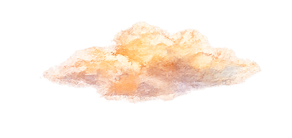
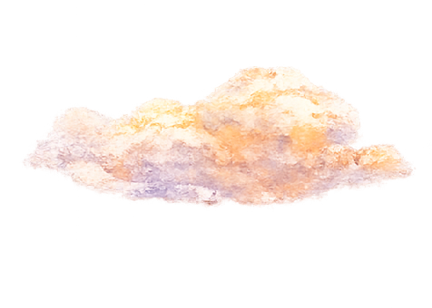
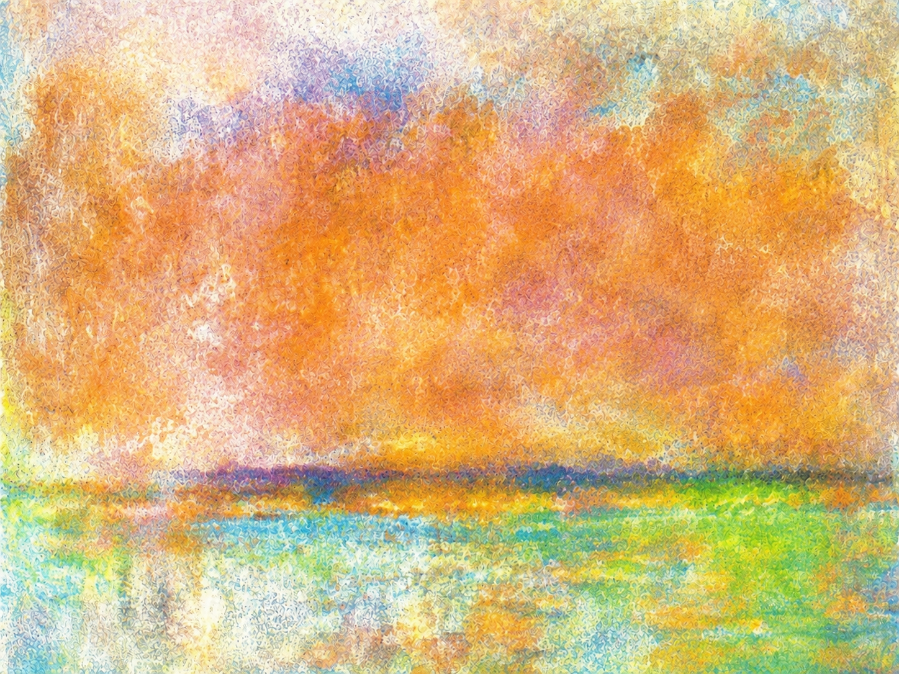

AR 明信片即時調參 v9.1 iPhone藍底＋說明＋Loading版
新增背景切換、第二艘船、每朵雲獨立 Z/大小/透明呼吸與更明顯船尾水紋。
開始 AR 掃描




尚未啟動
Camera: 等待資訊…
看說明
1920年 明治橋 明治橋曾是城市交通與河岸景觀的重要節點。 在時代更迭中，橋梁見證了地方生活與城市發展。
調整參數
結束掃描
整體 / 背景
整體尺寸
整體 Z
使用白色底層
白底透明度
白底 Z
白底大小
使用 bk.png 自訂背景
BK透明度
BK Z
BK大小
背景不規則柔邊
柔邊範圍
邊緣不規則
橋
後橋 Z
前橋 Z
船 1
大小
Y
Z
起點 X
終點 X
速度
亮度
對比
船 2
啟用第二艘船
大小
Y
Z
起點 X
終點 X
速度
亮度
對比
雲整體
整體速度
水層（穩定版）
顯示 water.png
透明度
Y
Z
大小
流動幅度
流動速度
水邊柔化
水邊不規則
歷史說明
字幕速度
字幕透明度
字幕框高度
1920年 明治橋 明治橋曾是城市交通與河岸景觀的重要節點。 在時代更迭中，橋梁見證了地方生活與城市發展。
套用說明文字
船尾水紋
生成間隔
水紋大小
水紋透明
存活時間
向後延展
輸出目前參數